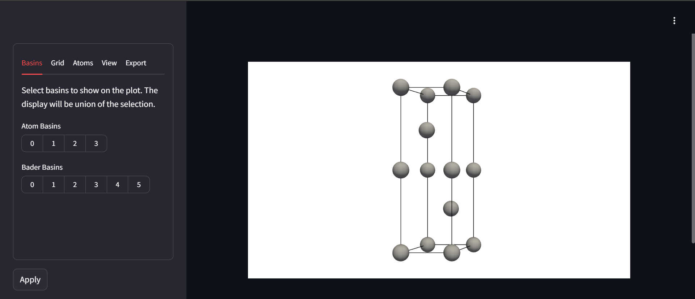

Basic Usage
BaderKit can be used in three main ways.
- Through python scripts
- Through the command line
- Through an interactive app in your browser
Python allows for more extensive logic to be used with the results, the command line is quick and convenient, and the web app allows for easy visualization.
Python¶
The Bader Class¶
The original goal of this project was to make the results of Bader analysis easily
accessible for more complex python codes. The core functionality is
found in the Bader class, which can be readily created by providing the path
to a VASP CHGCAR/ELFCAR or a .cube file.
from baderkit.core import Bader
from pathlib import Path
# instantiate the class
bader = Bader.from_dynamic(
charge_filename = "path/to/charge_file",
reference_filename = "path/to/charge_file", # Optional
method = "weight", # Optional
directory = Path("path/to/somewhere") # Optional
)
Results are stored as class properties. To run the algorithm and get results, simply call one of these properties. For example, we can get a complete summary dictionary.
results = bader.results_summary
atom_charges = bader.atom_charges # Total atom charges
atom_labels = bader.atom_labels # Atom assignments for each point in the grid
basin_volumes = bader.basin_volumes # The volumes of each bader basin
maxima_coords = bader.basin_maxima_frac # Frac coordinates of each attractor
Results can also be written to file. If no directory is provided, they will be written to the default directory defined with the class was first instanced.
bader.write_results_summary() # writes results to .tsv files
bader.write_basin_volumes([0]) # writes each basin in a list
bader.write_atom_volumes_sum([0,1,2]) # writes the union of atomic basins
The Grid Class¶
The Bader class only has convenience functions for loading VASP or .cube files.
For other formats, it must be created from BaderKit's Grid class. Behind the scenes,
the Grid class inherits from Pymatgen's VolumetricData class.
The Grid class can be created directly from a Pymatgen Structure object and a
dictionary of Array's representing the Charge Density.
from baderkit.core import Bader, Grid, Structure
from pathlib import Path
import numpy as np
# load a Structure object
structure = Structure.from_file(filename = "mystructure.cif", fmt = "cif")
# Load your data, however you can, into a numpy array
charge_data = np.array([
[[1,2,3],[3,4,5],[6,7,8]],
[[1,2,3],[3,4,5],[6,7,8]],
[[1,2,3],[3,4,5],[6,7,8]],
])
# Create a data dictionary
data = {"total": charge_data}
# create Grid objects for the charge-density and reference file
charge_grid = Grid(structure=structure, data=data)
# Create the Bader object
bader = Bader(charge_grid = charge_grid)
Note
For spin-polarized calculations, the data dictionary should have two entries,
total and diff containing the (spin-up + spin-down) data and
(spin-up - spin-down) data respectively. Only the data in the total entry
is used for bader analysis.
For VASP Users (And other pseudopotential codes)¶
VASP's CHGCAR contains only the valence electrons designated in the
pseudopotential (PP) used for the calculation. It is generally recommended to
recombine the valence charge density with the core density to use as the
reference file. To do this, add the tag LAECHG=.TRUE. to your INCAR file
before it runs.
This will write the core charge density to an AEECAR0 file and the valence
to AECCAR2 which can be summed together using the Grid class and then used
as the reference file for the analysis.
from baderkit.core import Bader, Grid
# load the standard charge density
charge_grid = Grid.from_vasp("CHGCAR")
# load the AECCAR0 and AECCAR2
aeccar0_grid = Grid.from_vasp("AECCAR0")
aeccar2_grid = Grid.from_vasp("AECCAR2")
# sum the grids
reference_grid = Grid.sum_grids(
grid1 = aeccar0_grid,
grid2 = aeccar2_grid
)
# create the bader object
bader = Bader(
charge_grid = charge_grid,
reference_grid = reference_grid
)
Command Line¶
In addition to the Python interface, BaderKit can be run from the command line. In most cases the commands mimic those from the Henkelman group's code. For basic use:
- Activate your environment with BaderKit installed
- Navigate to the directory with your charge density and reference file
- Run
baderkit run CHGCAR -ref CHGCAR_sum
Output files for atoms and bader basins will be written automatically to
bader_atom_summary.tsv and bader_basin_summary.tsv respectively. Additional
arguments and options such as those for printing output files or using different
algorithms can be viewed by running
baderkit run --help
There is also a convenience command for combining two grid files into a
CHGCAR_sum file.
baderkit tools sum AECCAR0 AECCAR2
Web GUI¶
Note
Pyvista dependencies must be installed to use this feature by running
pip install baderkit[webapp]
Repeatedly writing basins to file to visualize them can be annoying. To help
with this, we have the BaderPlotter class which uses pyvista
under the hood. This can be interacted with in python directly, or through a
Streamlit webapp which can be started from the command
line.
baderkit tools webapp CHGCAR -ref CHGCAR_sum
This will open a window in your browser similar to this:

The atom and bader basins can be selected using the Bader tab on the left.
Some basic visualization settings can be found under the Grid, Atoms, and
view tabs .
The selected basins can be exported to vasp-like from the Export tab. The
viewport can also be exported to a variety of image formats.
Warning
Currently the viewport is made by exporting the pyvista Plotter object to html each time an update is made. Changes made by interacting with the view port directly (e.g. rotation, zoom) will not show up in exported images, and the image may flash when the apply button is clicked.